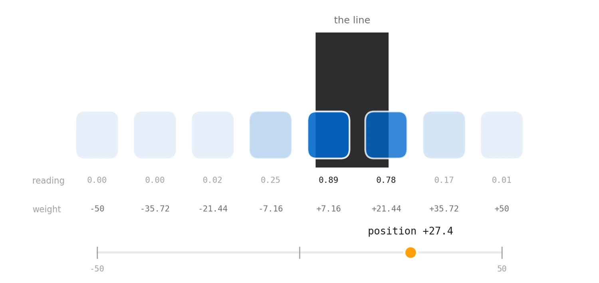
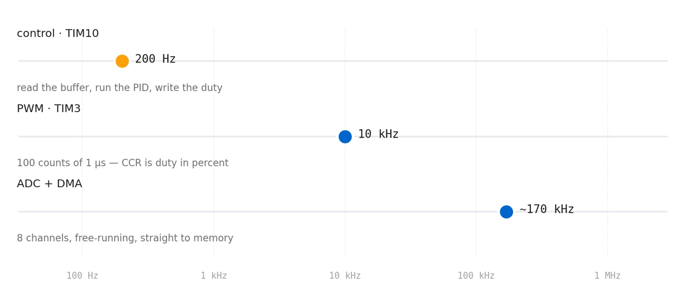
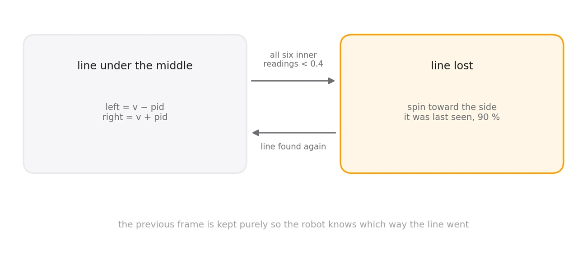

Eight reflectance sensors, three clocks running at once, and one number that says where the line is.

A line follower is a deceptively good exercise, because the hard parts are not the ones you expect. The PID is textbook. What decides whether the robot is quick or twitchy is everything around it: how the sensors are calibrated, how eight readings collapse into one number, how the sampling is kept away from the control loop, and what happens in the moment the line is not under the robot at all.
This one runs bare-metal on an STM32F411 at 80 MHz with the HAL, laid out in CubeIDE. No RTOS — the structure comes from three peripherals running at three different rates and staying out of each other's way.
No two sensors agree, and neither does the room.
An infrared reflectance sensor returns a voltage, and that voltage means nothing on its own. Each one has a different LED brightness and a different phototransistor gain; the tape reflects differently from the paper; and the ambient light in the room shifts the whole set. A fixed threshold is a promise the hardware cannot keep.
So the robot is calibrated before every run. Hold a button down and sweep the array back and forth across the line, and the firmware records a running minimum and maximum per channel — the minima start at 4095 and the maxima at 0, so the first reading claims both. A second button throws the calibration away and starts again.
After that every reading is mapped onto its own measured span:
norm = 1 − (raw − min) / (max − min)which puts every sensor on the same 0 to 1 scale — 1 meaning fully over the line — regardless of what raw numbers it happens to produce. The inversion is there because the line is dark, so the least reflected light means the most line.
Eight numbers in, one number out.
The controller needs a single error signal, so the eight normalised readings are collapsed into one by weighting each sensor by its physical offset across the array — −50 at the far left through to +50 at the far right, evenly spaced by 14.28 — and summing.
The useful property is that the answer is continuous. If the line sits between two sensors, both light up partially and the weighted sum lands between their two offsets, so the robot can resolve a position far finer than the sensor spacing. A simple "which sensor is darkest" scheme would quantise the error to eight values and make the steering step rather than flow.
One detail betrays the hardware: the weights are not applied in channel order. The ADC ranks are wired to sensors that are not in physical sequence, so the mapping from channel to offset is scrambled in the source — the kind of line that looks like a typo until you look at the board.
Sample fast, decide slowly, drive faster.
The part I like most about this firmware is that the three jobs run at three rates, and none of them waits for another.
The ADC free-runs. It is set to scan all eight channels continuously and hand the results to DMA, which drops them into a buffer in memory without involving the CPU at all. At 3-cycle sampling on a 20 MHz ADC clock a full sweep of eight takes about six microseconds, so the buffer is refreshed thousands of times between control ticks and the loop simply reads the freshest values whenever it wants them. No start, no poll, no blocking.
The control loop is a timer interrupt at 200 Hz — normalise, compute position, run the PID, write two duty cycles, done. Five milliseconds is loose for an M4 at 80 MHz, which is the point: the deadline is never in question.
The PWM runs at 10 kHz, above hearing, so the motors do not whine. And the timer is set up with a quiet piece of arithmetic: prescale 80 MHz down to exactly 1 MHz and set the period to 100, and the counter now ticks in microseconds with a span of exactly one hundred. The compare register is the duty cycle in percent — the controller's output goes straight into the register with no scaling at all.

The PID is the easy half.
With a position and a setpoint of zero, the rest is a standard PID — proportional 2, integral 0.01, derivative 0.32, tuned on the track rather than derived. Its output becomes a differential: a base speed plus the correction on one wheel, minus it on the other, each clamped so neither can be commanded past full or below a standstill. Each motor gets two compare channels, one per direction of its H-bridge, so reversing a wheel is a matter of which channel carries the duty.
The interesting case is the one PID cannot handle. Come into a hairpin too fast and the line leaves the array entirely — every sensor reads white, the error goes to zero, and a naive controller drives happily straight on into the wall, perfectly confident it is centred.
So the firmware keeps the previous frame's readings for the left and right thirds of the array. When the middle sensors all fall below 0.4, the robot stops following and starts hunting: it spins in place toward whichever side last saw the line, at 90 % duty, until the line comes back under the array. One frame of memory is all it takes to turn a crash into a recovery.

Where the tuning gets settled.
The serial port carries the position estimate out to a laptop while the robot drives, which is how the gains were found — watching the number oscillate, ring or lag on a real corner tells you far more than reasoning about it does. It is also the one piece of the loop that costs real time, so it is there for tuning and not for the run.
1 − (raw − min) / (max − min), giving 0 to 1 per sensor±50 to ±7.16, clamped to ±50kp 2, ki 0.01, kd 0.32, setpoint 0